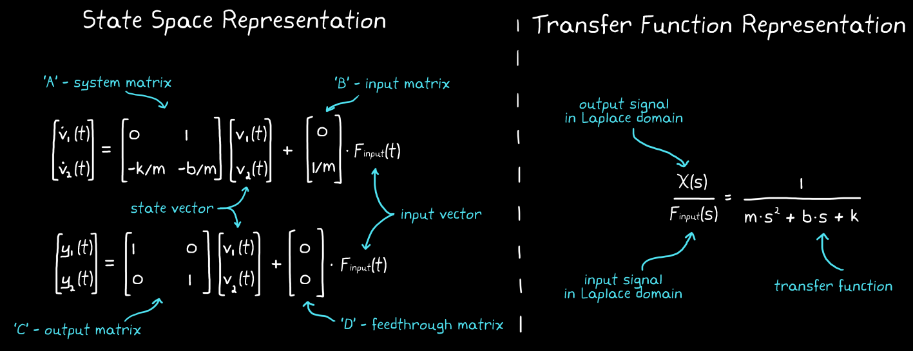

Solution
The two most popular alternate representations are:
- Transfer functions
It is a Laplace domain representation of the system and is associated with the era of control techniques labeled classical control theory.
- State space representation
It is a time domain representation, packaged in matrix form, associated with the era labeled modern control theory.

State space vs Transfer function representation